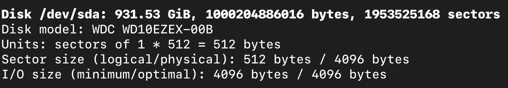
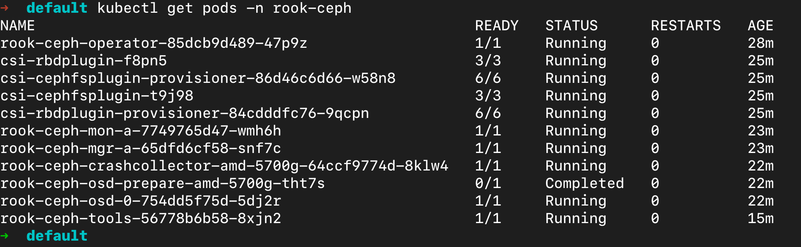
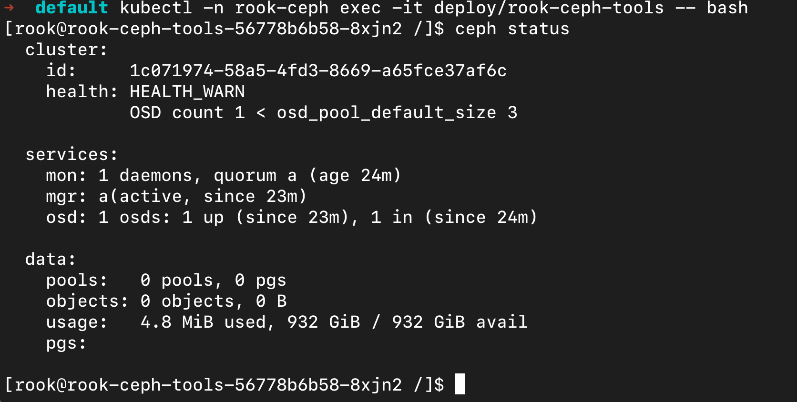

Kubernetes集群实践（八）Kubernetes安装云原生存储系统Rook
本文主要介绍如何安装和使用云原生存储系统Rook。
关键词：k8s
准备工作
- Ubuntu 20.04 LTS amd64，32GB，作为Master节点
假定已经安装了K8s集群，这里以单节点集群为例
Rook
- Rook是一个开源的云原生存储协调器，提供平台、框架和对各种存储解决方案的支持，以与云原生环境进行本地集成。
- Rook将存储软件转变为自我管理，自我扩展和自我修复的存储服务。它通过自动化部署、引导、配置、供应、扩展、升级、迁移、灾难恢复、监视和资源管理来实现。Rook使用底层云原生容器管理，调度和编排平台提供的功能来执行其职责。
- Rook利用扩展点将其深度集成到云原生环境中，并为调度、生命周期管理、资源管理、安全性、监视和用户体验提供无缝的体验。
部署Rook
下载源码，项目地址：https://github.com/rook/rook/releases
最新源码为1.9.7
1 | git clone --single-branch --branch v1.9.7 https://github.com/rook/rook.git |
以块存储RBD为例
部署准备工作
1 | cd rook/deploy/examples |
确保存储设备没有文件系统
1 | sudo fdisk -l |

如果有GPT或者dos等描述文字，说明存在分区表，需要把这个删掉
1 | sudo wipefs /dev/sda |
可以看到分区表
执行删除命令
1 | sudo wipefs -a -f /dev/sda |
根据需要修改一下集群
1 | vim cluster.yaml |
主要是指定设备，设定mon为1，mgr为1等操作
1 | ################################################################################################################# |
现在可以部署了
1 | kubectl apply -f cluster.yaml |
安装ceph工具
1 | kubectl applt -f toolbox.yaml |
等待相关操作执行完毕

此时进入ceph-tools，查看ceph集群工作状态
1 | kubectl -n rook-ceph exec -it deploy/rook-ceph-tools -- bash |

挂载Rook块存储到Pod容器
首先需要创建strongeClass，才可以让k8s控制器根据声明的PVC创建PV
1 | apiVersion: v1 |
然后在Pod里创建PVC
1 | apiVersion: v1 |